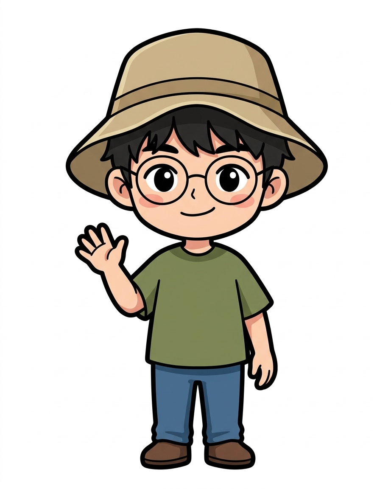
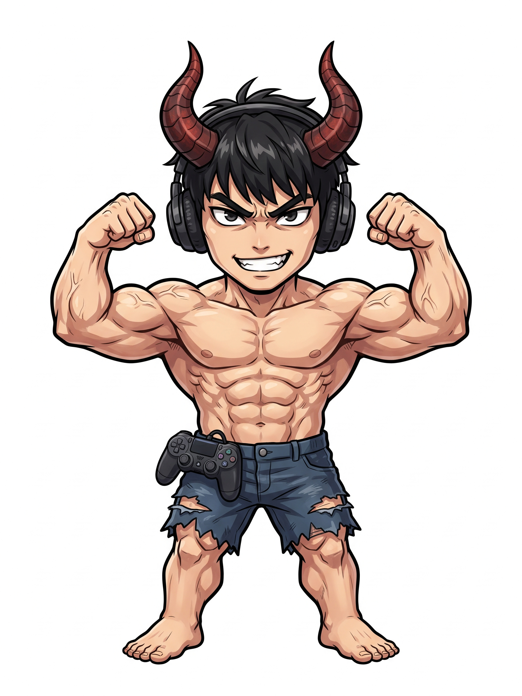
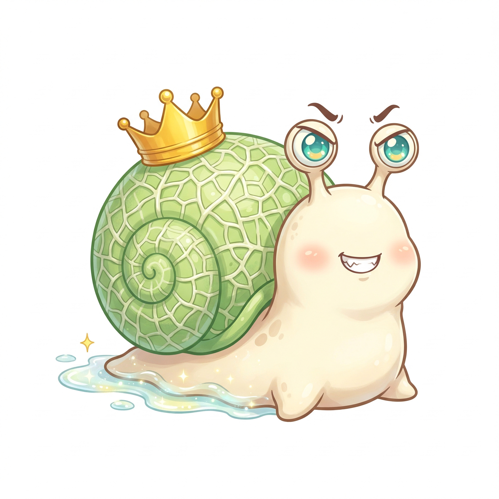

吉祥物
2 倍
淺黃
深綠
3 倍
淺黃
深綠
我是瓜吉，今天也一起顧瓜吧！
冠冠小教室

我是冠冠，有問題舉手問我！
最終大魔王：終焉農夫・筋肉魔導冠皇GG改
一階段
第一條血
二階段

第二條血
蝸牛大王

溫室裡的植日生
點陣風樣板
植株狀態
品牌色票
- 品牌深綠#3D9257
- 鮮綠#3BB254
- 瓜吉淺綠#A8D175
- 網紋淡綠#DDECB3
- 品牌黃#FABF0D
- 小花黃#FAC93C
- 瓜蒂淡黃#F5F2A3
- 番茄紅#EA5A5A
- 蒜淘米白#FFF4CC
- 腮紅#D96E68
- 外框黑#1A1A1A
- 底白#FFFFFF